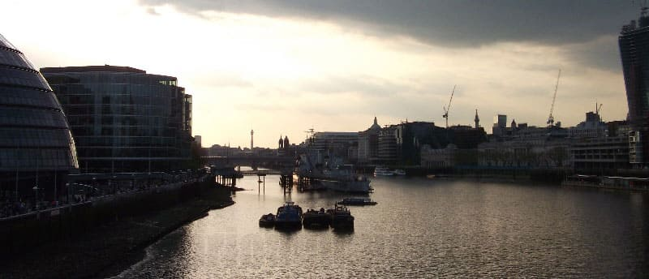
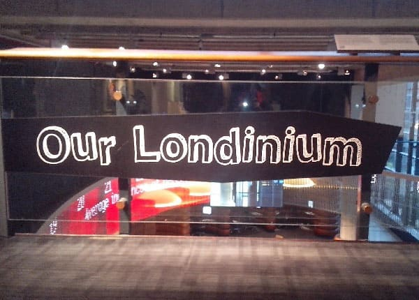
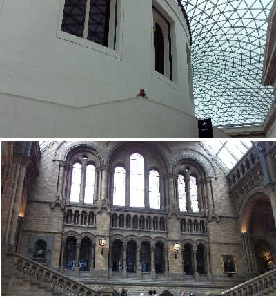
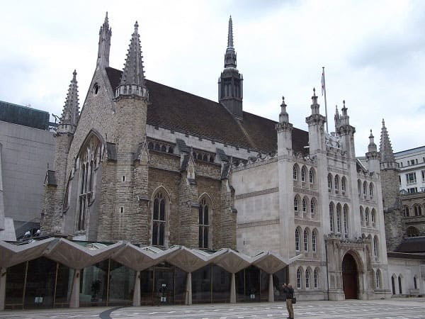
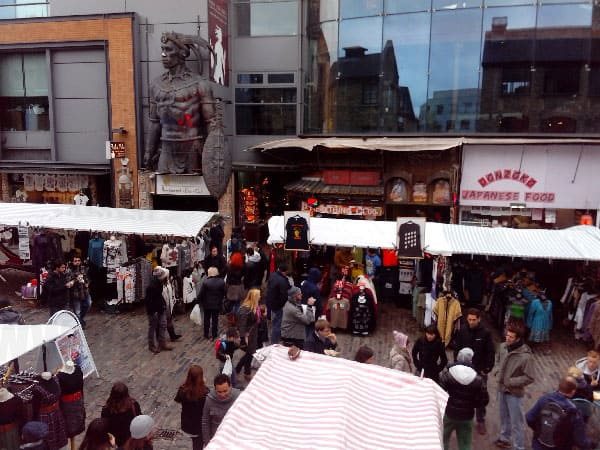

Londres es la capital de Inglaterra y del Reino Unido y la ciudad con más población de Europa.
Situada a orillas del Támesis fue fundada por los romanos con el nombre de Londinium hace dos mil años.
Es una referencia de ciudad global, finanzas, arte, espectáculos, medios de comunicación, turismo, transporte.
Londres en transporte es líder mundial, con una extensa red de metro, la más antigua de Europa y con un flujo de visitantes muy elevado contando con 5 aeropuertos en sus inmediaciones.

En ella convive una gran cantidad de gente de diversos orígenes, y culturas donde más de dos tercios hablan dos o más lenguas.
La ciudad cuenta con 9 millones de habitantes en el centro (hasta zona 3) y cerca de 12 y 14 millones en todo el área de Londres.
El origen del nombre de Londres es incierto aunque viene de Londinium de los romanos y puede venir de la forma del río.
Al pasar el siglo quinto Londres fue abandonada y a partir de ahí se convirtió en un mero asentamiento anglosajón con cerca de 12.000 habitantes.
En el siglo X Londres era la ciudad más grande de toda la isla de la Gran Bretaña pero todavía no era la capital que recaía sobre Winchester.
En el siglo XI tras la construcción de la abadía de Westminster Londres empezó a cobrar relevancia y se consagró como centro del gobierno nacional.
Después se edificaría la Torre de Londres y el Palacio de Westminster. En torno al siglo XII Londres pasaría a sobrepasar los 100.000 habitantes.

En el siglo XVI Londres pasaría se ser ciudad católica a protestante, en concreto anglicana, religión fundada por Enrique VII y doblaría el número de habitantes debido a la gran inmigración
procedente de Europa. Aun así estos aumentos de población se verían disminuidos con las pestes que acuciaban toda Europa y de la que Londres no saldría indemne.
En torno a 1750 se edificaría el palacio de Buckingham por el rey de aquel entonces Jorge III, residencia de la actual reina de Inglaterra, Isabel II.
En el siglo XIX, Londres se convirtió en un referente de ciudad a nivel mundial siendo la capital del imperio británico y la ciudad más grande del mundo, record que tendría hasta el año 1925 cuando ciudades de Estados Unidos sobrepasarían esa cifra.
En plena revolución industrial Londres comenzó a construir una vasta red de ferrocarriles que consiguió descongestionar la ciudad.
Además, debido a las conquistas y descubrimientos del Imperio Británico acapararía una gran cantidad de joyas, arte y restos arqueológicos que la alzarían mucho más.
Siendo uno de los referentes mundiales en cuanto a investigación y ciencia, sus universidades eran referentes mundiales mucho antes de las de Estados Unidos, con Oxford y Cambridge a la cabeza, las cuales se encuentran en pueblos a no más de 100 millas de Londres.
A partir de la segunda guerra mundial la población disminuiría notablemente pasando de 9 a 7 millones, sin embargo con el paso de los años su población ha ido aumentando y más en los últimos cinco años, siendo foco de
la inmigración europea, sobre todo de países del este como Polonia a raíz del aumento de países de la Unión Europea..
Londres es la capital de las finanzas Europea y lugar donde se encuentran las sedes y cuarteles centrales de los principales bancos y empresas europeas. El área central es lo que se denomina La City Su índice el FTSE100 es el que más volumen mueve de todo el continente seguid del DAX germano. En los últimos años el número de rascacielos en la City se ha incrementado notablemente. En 2007 se edificó el rascacielos conocido como El Shard, a pie de London Bridge, el más alto de Europa con 306 metros de altura y 72 plantas.

Grandes Museos
Londres cuenta con innumerables museos únicos en el mundo.
Los más famosos el British Museum con una colección de obras de arte y de reliquias de todas las culturas y civilizaciones, la imagen superior de la figura.
También el museo Arqueológico con una de las mayores colecciones de dinosaurios y fósiles del mundo, así como minerales y meteoritos, imagen inferior.
También destaca la exposición sobre el reino animal y la biología en general.
Completan la tanda el Tate Museum con una gran colección de arte moderno, así como el museo marítimo o el de la Guerra con una gran exposición de lo que aconteció en la segunda guerra mundial.

Londres cuenta con varias joyas de la arquitectura, aunque casi todas de los últimos 600 años ya que de aquella ciudad medieval fortificada apenas se conserva la torre del rey y parte de la muralla.
La catedral de San Paul y la abadía de Westminster son esa parte del encanto londinense así como el Parlamento famoso y curiosa torre del reloj en el mundo entero e inspirado en varias películas y novelas como Sherlock Holmes.
Además debido al metro de Londres ir de una zona de monumentos o de iglesias llevara minutos, ya que desde por ejemplo Hyde Park a la Torre de Londres puede haber como 4 kilómetros, y desde Regent’s Park a la Noria puede haber otros 3 kilómetros.
También cuenta con unos magníficos parques famosos en el mundo entero como Hyde Park o Regent´s Park donde esta el zoo londinense y el parque botánico que hace unos años era de los más completos del mundo.
Además de estos dos siglos cuenta con otros edificios emblemáticos como Albert Hall y algún otro edificio neoclásico como el Guild Hall en pleno centro de Londres que se muestra en la figura de la derecha.

Londres alberga gran cantidad de culturas y estilos de vida, y existe una gran desigualdad social entre los más pobres que pueden trabajar en el centro pero viven en las afueras y los más ricos que aun ganando fortunas pueden
no llegar a fin de mes debido a los altos costes del ocio en general, que puede suponer un 500% más que una ciudad como Madrid.
Sin embargo los salarios no son 5 veces más sino que puede que unas 3 veces más para el mismo puesto.
Solo los que trabajan en la City tienen realmente el suficiente salario para poder permitirse cualquier capricho en el centro de Londres, A1 donde un mísero alquiler de una habitación de 40 metros cuadrados puede rondar las 3000 libras mensuales.
En el centro habitan diferentes comunidades con distintas religiones o grupos sociales. El máximo exponente es Camden Town, un barrio turístico lleno de diferentes tiendas y donde se sirve comida típica de cualquier parte del continente.
© 2016 - All Rights Reserved - Diseñada por Sergio López Martínez
![[Valid RSS]](https://www.feedvalidator.org/images/valid-rss-rogers.png "Validate my RSS feed")